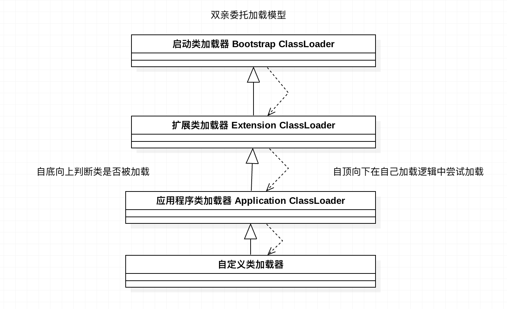
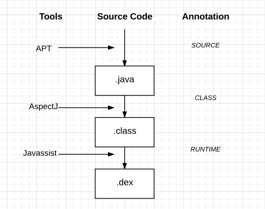
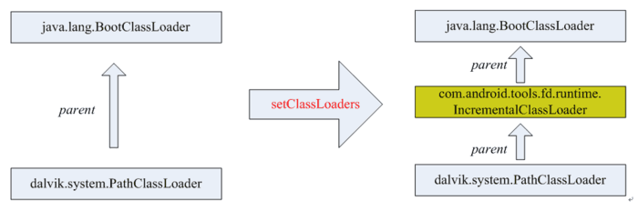

安卓平台中的动态加载技术分析
安卓平台的动态加载原理，本质其实还是利用java相关知识实现。然而java语言中，开发人员能通过程序进行动态操作class的，主要是字节码生成和类加载器这两部分的功能。本文中也主要是围绕这两方面的技术，展开在安卓平台上的应用分析。
阅读本文，一起宏观理解安卓插件化，热修复，模块化，AOP，Java类加载等知识。
动态加载技术分析
一、Java基础知识
1、虚拟机类的加载剖析
Java虚拟机把描述类的数据从Class文件加载到内存，对数据进行校验、转化解析和初始化，最终形成被虚拟机直接使用的Java类型，完成了类的加载机制。
类型的加载、链接和初始化都是在程序运行时期间完成的，虽然会在初次加载耗一定性能，但是正是这个机制为Java提供高度的动态扩展灵活性。如可以编写一个面向接口的应用程序，运行时再决定实际的实现类，实现类可以从本地或是网络动态加载。
类从被加载到虚拟机内存到从内存中卸载，完整的生命周期包括：加载（loading）、验证（Verification）、准备（Preparation）、解析（Resolution）、初始化（Initialization）、使用（Using）、和卸载（UnLoading）七个阶段，其中验证、准备、解析统称为连接（Linking）。
这里主要分析下加载阶段：
‘加载’是‘类加载’过程中的一个阶段，主要完成三件事：1）通过类的全限定名来获取定义此类的二进制字节流。2）将这个字节流所代表的静态储存结构转化为方法区的运行时数据结构。3）在内存中生成此类相应Class对象，作为方法区这个类的各种数据的访问入口。
虚拟机规定加载一个类在加载阶段需要能“通过一个类的全限定名获取此类二进制字节流”，但是并没有规定要从哪里、怎样获取，例如：
- 从ZIP中读取，如：jar，dex等。
- 网络流中获取，如Applet。
- 运行时计算生成，如动态代理。
- 有其他文件生成、数据库中读取等。
- …
这样，开发人员就可以通过自定义类加载器（ClassLoader），或是hook系统类加载器来控制字节流的获取方式。
类的显式加载（Class.forName）和隐式加载（如：new）两种加载方式，最后都会调用类加载器的 loadClass 方法来完成类的实际加载工作。

类的加载器具有双亲委托模型，该特性保证了Java程序的安全性，但是并不是虚拟机强制规定的，我们也可以自定义类加载机制，来破坏这种机制。如安卓插件加载，热修及OSGI模块化动态加载中的类加载技术应用。
2、面向切面编程（AOP）
Java面对对象的语言，平时用的最多的就是OOP（面对对象编程），然后在很多技术研发中（如安卓动态加载，性能监控，日志等）慢慢的接触到一个新的名次“AOP”，Google过后，才发现这是一种很特别、很强大、很高级实用的编程方式。百度百科解释如下：
AOP为Aspect Oriented Programming的缩写，意为：面向切面编程，通过预编译方式和运行期动态代理实现程序功能的统一维护的一种技术。AOP是OOP的延续，是软件开发中的一个热点，也是Spring框架中的一个重要内容，是函数式编程的一种衍生范型。利用AOP可以对业务逻辑的各个部分进行隔离，从而使得业务逻辑各部分之间的耦合度降低，提高程序的可重用性，同时提高了开发的效率。
其实AOP编程模式已经存在很多年类，并且在Android项目开发中也有很多地方的应用，有很多优秀且流行的工具如APT，AspectJ, Javassist等，为我们AOP开发提供了便利实现。
不同的工具库作用在不同的阶段，这里引用网络上一张图，可以说明三者间的区别。

APT
APT(Annotation Processing Too）应该都听过并且用过，概念比较好理解，主要作用在编译期，也是比较流行且常见的技术。
代码编译期解析注解后，结合square公司的开源项目javapoet项目，生成自定逻辑的java源码。有很多开源库都在用如：ButterKnife、EventBus等。
AspectJ
AspectJ支持编译期和加载时代码注入, 有一个专门的编译器用来生成遵守Java字节编码规范的Class文件。更多细节可以看这里。
Javassist
Javassist是一个开源的分析、编辑和创建Java字节码的类库。允许开发者自由的在一个已经编译好的类中添加新的方法，或者是修改已有的方法，允许开发者忽略被修改的类本身的细节和结构。
360开源插件项目RePlugin中，为了减少对安卓系统的Hook点，又希望解耦开发层代码逻辑，其中就用到了Javassist技术。
二、插件化技术分析
安卓项目发展早起，可能最初只是为了解决65535问题及包大小，各家公司都在研究安卓平台动态加载，也就是现在所谓的插件化解决方案。
从14年的Dynamic-load-apk开源项目，到现在（17年）的RePlugin及VirtualAPK，分析下实现原理，个人理解，其实并不是很难，无非就是利用静态代理、动态代理，反射，HOOK及ClassLoader（dex合并，或双亲委托破坏）等相关技术对安卓四大组件的沙盒实现。
当然真正的难点在于对千万安卓机型及Rom的适配，及完整安卓功能的兼容实现，不可否认插件化大牛在安卓行业发展的巨大贡献（感谢各位开源大佬🙏）。
既然已经有很多优秀的开源库，那么我们是否还有必要学习它呢？答案是否定的。
个人认为，学习插件化是一名安卓开发，接触系统源码，牢固安卓知识，提升开发技能得良好途径。推荐可以好好学习下15年最早开源DroidPlugin项目，虽然和今年开源的RePlugin和VirtualAPK比，有一定的复杂及兼容差，但是分析后者其实还是会有前者实现思想，基本上万变不离其综（如activity的插件实现，都是占坑思想；都是在startActivity后，利用一定技术手段在一定点替换targeActivity，等AMS回调回来，在找一合适点，换回原activity）。个人理解后者是从不同角度对DroidPlugin的升级及优化。
三、热修复
安卓技术发展中期，有很多大型APP，需要紧急解决线上问题，业界开始研究线上热修复技术。
期间，Google官方为了解决65535问题，发布了Multidex多dex方案，利用Application类加载及初始化的过程，从中attachContext时候，动态加载多个dex。并在Android Studio 2.0发布了Intant Run快速代码部署方案（热插拔）。
这不但给插件化给出类借鉴方案，也给热修改提供了Java层的可行方案（此文不展开Native层的实现分析）。具有代表性的项目如美团的热更新方案Robust。
这里简单分析下Google intant Run实现原理
通过阅读官方文档及源码，可看出官方代码快速部分定义了三个概念：
- 热拔插：代码改变被应用、投射到APP上，不需要重启应用，不需要重建当前activity。场景：适用于多数的简单改变（包括一些方法实现的修改，或者变量值修改）
- 温拔插：activity需要被重启才能看到所需更改。场景：典型的情况是代码修改涉及到了资源文件，即res。
- 冷拔插：app需要被重启（但是仍然不需要重新安装）场景：任何涉及结构性变化的，比如：修改了继承规则、修改了方法签名等。
搜下Intant Run Server源码会发现代码更新方式逻辑如下：
|
|
主要分析下涉及到代码更新的热插拔和冷插拔。分析代码过程主要是反编通过Intant Run为我们生成的Apk，然后顺藤摸瓜。
首先看这个壳子APK的Application都干了什么，分析下壳子APK是怎么启动我们真正的App的。
|
|
这里可以看到最后会有个IncrementalClassLoader，当前PathClassLoader委托IncrementalClassLoader加载dex。代码冷部署方案中，当APK进程重启时，IncrementalClassLoader会优先加载部署的变更代码。
分析源码看出它的结构图如下：

createRealApplication方法创建出真正的Application，启动真正Dex方式和上面插件化思想有点类似，也是一个壳子动态加载代码的很好例子。
|
|
真正的Application创建后，接下来再分析下变更的代码是如何热更新生效的？
|
|
程序在调用realApplication前，替换调了自己进程中所有关于Application的实例，包括：
- ActivityThread的mInitialApplication为realApplication
- mAllApplications 中所有的Application为realApplication
- ActivityThread的mPackages,mResourcePackages中的mLoaderApk中的application为realApplication。
monkeyPatchExistingResources方法中替换资源问题,新建一个AssetManager对象newAssetManager，然后用newAssetManager对象替换所有当前Resource、Resource.Theme的mAssets成员变量。
到这里APK完成了启动操作，接下来重点分析下神奇的handleHotSwapPatch热部署，不用重启Activity，不用重启进程，就可以即时生效，这种方案对安卓的线上热修复有很大的思路借鉴。
|
|
handleHotSwapPatch主要作用是反射调用AppPatchesLoaderImpl类的load方法,看下load方法具体实现：
|
|
load方法主要加载了以“Patch类名+$override”命名的一个类，并初次加载时把该类$change中成员$obsolete设置成true，然后赋值给已经加载的原始类。
反编译原class文件，会发现每个类会多个“IncrementalChange localIncrementalChange = $change”成员，并会在每个方法内添加以下代码，已拦截patch执行逻辑。
|
|
这样，就可以不用重启，即时调用新类中的新方法逻辑。有兴趣的同学可以进一步看下nuptboyzhb同学反编译的intant run源码。
四、模块化
安卓技术发展到成熟器，安卓客户度项目发展到一定规模，为了便于各个业务线低耦合开发、加快编译速度、按模块业务升级及测试等方面的高效进行，各家都陆续提出了模块化解决方案。
讲到模块化，还有个概念是“组件化”，网上有博客直接认为是一个概念，个人认为，两者还是有本质的不同的。
个人理解，组件化目标对象是代码，为了解耦功能模块代码，加大复用力度，按照代码功能模块抽离出组件模块，形成项目的“组件化”。而模块化目标对象是开发人员，更多的是以业务线为界限，解耦业务线间的代码调用，使得一个业务线内高内聚，可以独立完成开发到上线各阶段工作，而不受其他模块开发影响。也可以说组件化只是模块化项目中的一个子集概念。
模块化过程中，需要达到的开发目标要求，这引用阿里Atlas开源项目目标定义：
- 在工程期，实现工程独立开发，调试的功能，工程模块可以独立。
- 在运行期，实现完整的组件生命周期的映射，类隔离等机制。
- 在运维期，提供快速增量的更新修复能力，快速升级。
然而，在Java世界里，已经有了OSGI规范，是基于Java语言的动态模块化规范。安卓模块上，也可以参考OSGI的解耦方式，定制ClassLoader，动态加载模块代码。
有兴趣的可以研究的阿里的手机淘宝研发团队开源态组件化(Dynamic Bundle)框架项目Atlas。
五、总结
本文主要以宏观视角，从Java动态加载基础知识，到最近比较流行的“模块化”进行了基本概念及技术基础的回顾，目的是对 有关Java动态加载技术在安卓平台上的应用 等相关的技术树的整理和梳理。希望能够对安卓平台的插件化、及模块化相关的动态加载技术有个整理宏观了解，并针对一定方向有一定深入研究。
欢迎转载，请标明出处：常兴E站 canking.win